手放した「いつかやりたいこと」を星に預け、
ひとつずつ受け取り直す。
願いのための外部脳。
療養・休職・育休・介護などで、しばらく日常から離れる人へ。
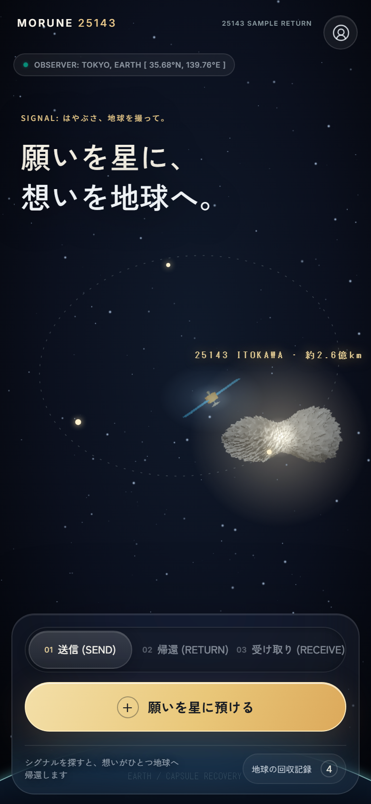
わたし自身、やりたいことを一度手放さなければならない時期を経験しました。手放すときは「消えてしまう気がする」。戻ったときは「多すぎて、どれから手をつければいいか分からない」。この2つを、身をもって知っています。
大学院で、1on1でのふりかえり（省察）を支える研究をしてきました。人は、過去の自分の言葉に出会い直すと、次の一歩を選びやすくなる。MORUNE は、その考え方を「願い」に当てはめたものです。
人材育成の仕事で、多くの人の「やりたい」が忙しさや環境の変化で後回しになる場面を見てきました。必要なのは、やる気を出させる仕組みではなく、願いを失わずに待っていられる場所だと考えています。
療養・休職・育休・介護などで、数週間から数か月、日常から離れる人がいます。離れる前にも、離れている間にも、「いつかやりたいこと」は生まれます。
まだ予定にできない願いは、ToDo にも手帳にも置き場所がない。書いても、どこかに埋もれる。
たまった一覧を一度に見ると、それ自体が重荷になる。どれから向き合えばいいか分からず、結局また閉じてしまう。
どれも「置く」ことはできるが、置いたまま見返されない。生活や目標のアプリは、使い始めて100日以内に約7割が使われなくなるとされています。
置きたい気持ちはある。
でも、置いたまま忘れてしまう。
願いを60字まで書くと、星になってイトカワの軌道を回る。帰還が始まる日も選べる。
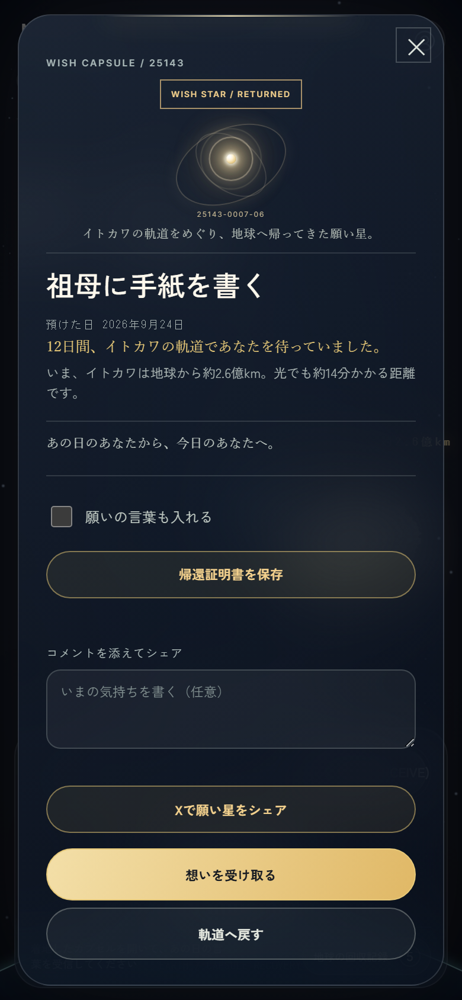
2 帰ってくるスマホを振ると、1つだけ地球へ。「30日間、あなたを待っていました」
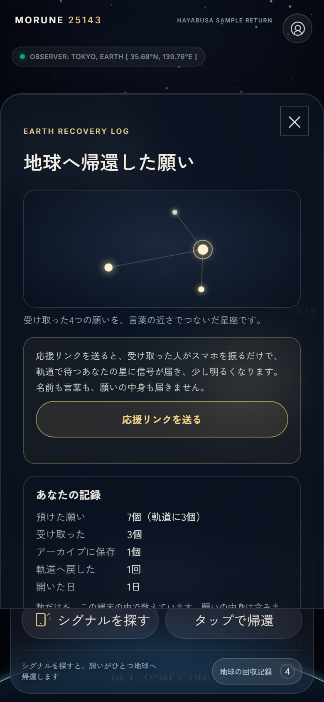
3 受け取るか、もう少し預けるか受け取った願いは星座になる。今でなくていいなら、軌道へ戻せる。
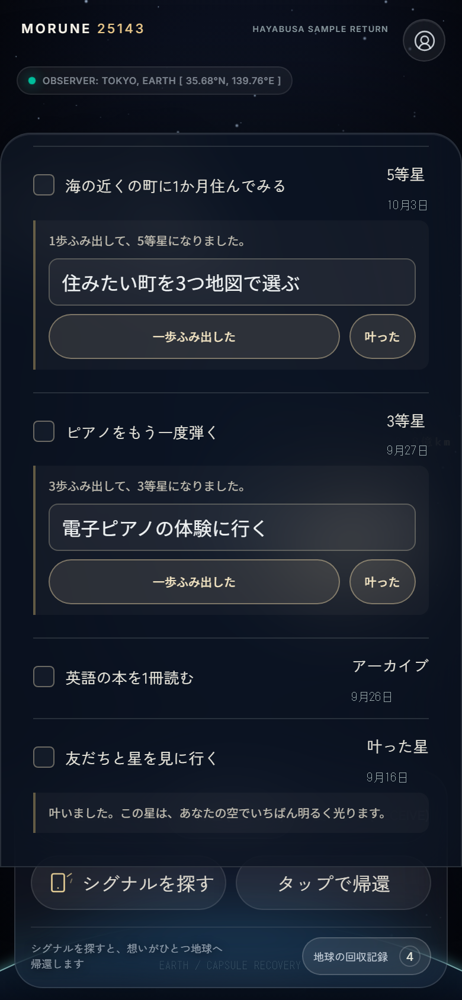
4 小さな一歩で育つ一歩ふみ出すたびに、6等星から1等星へ明るくなる。叶ったら「叶った星」に。
| メモ・ToDo アプリ | X などの SNS | MORUNE 25143 | |
|---|---|---|---|
| 扱うもの | やること（期限がある） | いま言いたいこと | まだ予定になっていない願い |
| 誰に向けて | 今の自分 | 今の他人 | 未来の自分 |
| 見返し方 | 自分で一覧を開く（開かなくなる） | 流れて埋もれる | 1つずつ帰ってくる。待っていた日数が分かる |
| 公開 | しない | 公開が基本 | しないのが基本。応援する人にも中身は見えない |
| 反応 | なし | いいね・返信・フォロワー数 | 応援の信号だけ（光るだけ。数を競わない） |
| 続けさせ方 | 期限・通知・連続日数 | 反応の数 | 期限も連続日数もなし。何もしなくても星は暗くならない |
みんなの星（匿名で願いを星空に流す）は実装済み。投稿を見守る体制が整うまで、本番では止めている。
願い1件は「周回中→判断待ち→受け取った／保存」と動く。選ばずに閉じても行き止まりにならない。ルールは1つのファイルに集め、テストで確かめている。
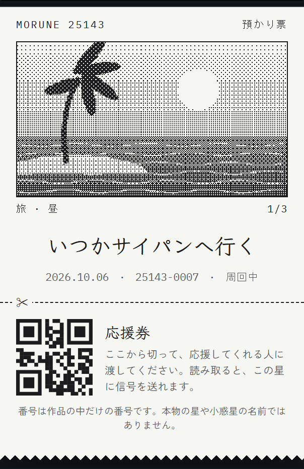
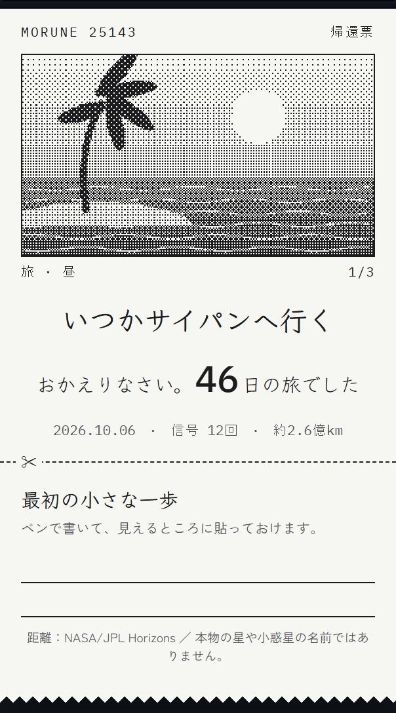
店舗用の感熱プリンター（80mm ロール）で、その場で印刷する。絵はキーワードごとに数種類あり、どれが出るかは紙が出てくるまで分からない（たまにレア）。
預かり票の下は「応援券」。応援してほしい人に手渡し、読み取ってもらうと星に信号が届く。帰還票の下は「最初の小さな一歩」をペンで書く欄。
離れている時間はオフラインが長い。DM の「頑張れ」より、手で受け取れる物の方が嬉しい。紙の文字はいつか消えるが、願いは星が持っている。
療養・育休・介護の当事者とつながっているコミュニティの運営者に、必要な人へ紹介してもらう。最初の利用者は、身近な人への声かけで集める。
1人が願いを預けると、応援してほしい人に応援券やリンクを渡す。受け取った人が MORUNE に触れる。イベントでは、その場で印刷して手渡す体験にする。
いちばんのリスクは「願いが帰ってきても、本人がアプリを開かなければ届かない」こと。だから、感想ではなく、実際にまた開いたかを数える。
身近な人に使ってもらい、「誰の」を絞る
デモは「預ける→帰ってくる→一歩で育つ」
絵の画風をそろえ、印刷の体験をつくる
見守る体制を整えてから、匿名の応援の場へ
ここからは、MORUNE 25143 がどんなプロダクトで、どんな機能があり、どう使うのかの説明です。開発途中のものは、そのつど「開発途中」と書いています。
| URL | https://morune-25143.morune-25143.workers.dev/ |
|---|---|
| ログイン | 不要（ID・パスワードはありません） |
| 動く環境 | スマホのブラウザ（iPhone の Safari、Android の Chrome）。パソコンのブラウザでも使える |
| 保存 | 願いはその端末のブラウザの中に保存する。別の端末とは共有されない |
| ネットなし | 一度開けば、ネットがなくても預ける・帰す・受け取るが動く。ホーム画面に追加できる |
操作に応じて、願いの状態・星の明るさ・番号が変わる。番号の発行と応援の信号は、サーバーとの通信で動く。
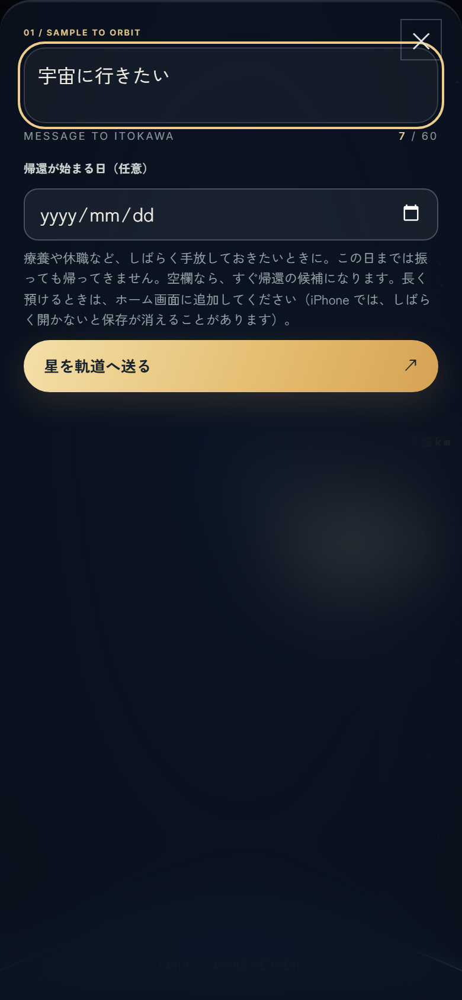
1 願いを書く60字まで。「帰還が始まる日」を選ぶと、その日まで帰ってこない（翌日〜1年後、空欄なら すぐ候補に）。
預けた願いは星になり、25143（イトカワ）の軌道を回る。30個まで置ける。
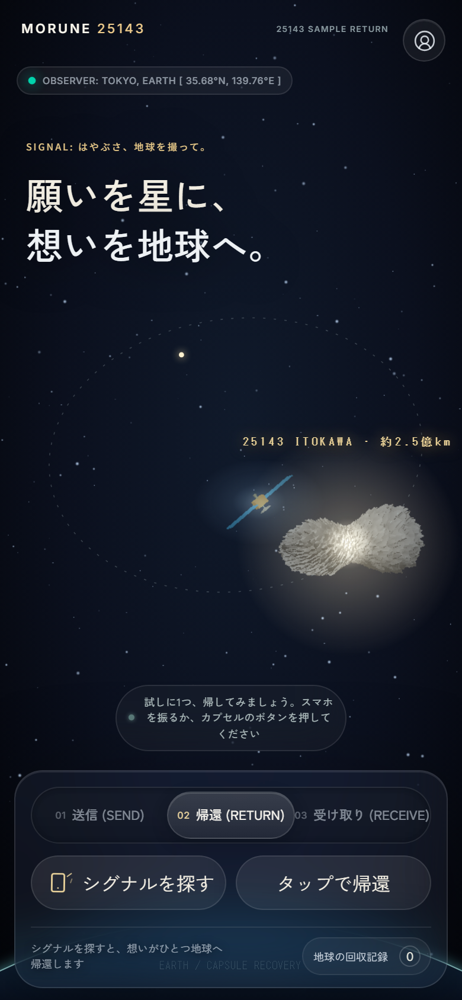
3 帰す「02 帰還」で、スマホを振る（シグナルを探す）か「タップで帰還」。帰ってくるのは1つだけ。
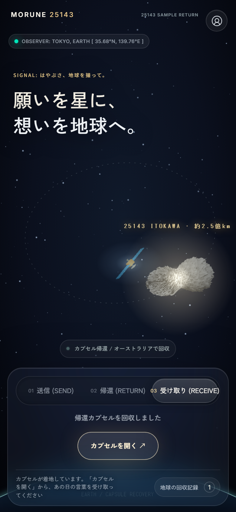
4 カプセルが着地「カプセルを開く」を押す。開くまで、次の願いは帰ってこない。
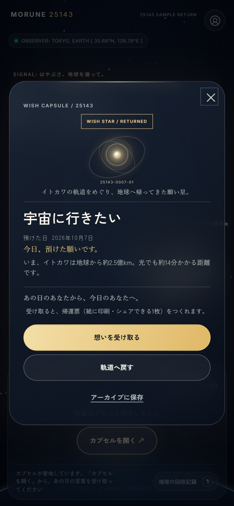
カプセル：受け取る／戻す／保存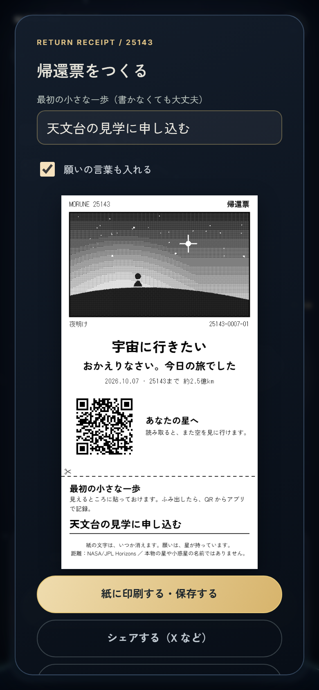
受け取ったあと：帰還票をつくる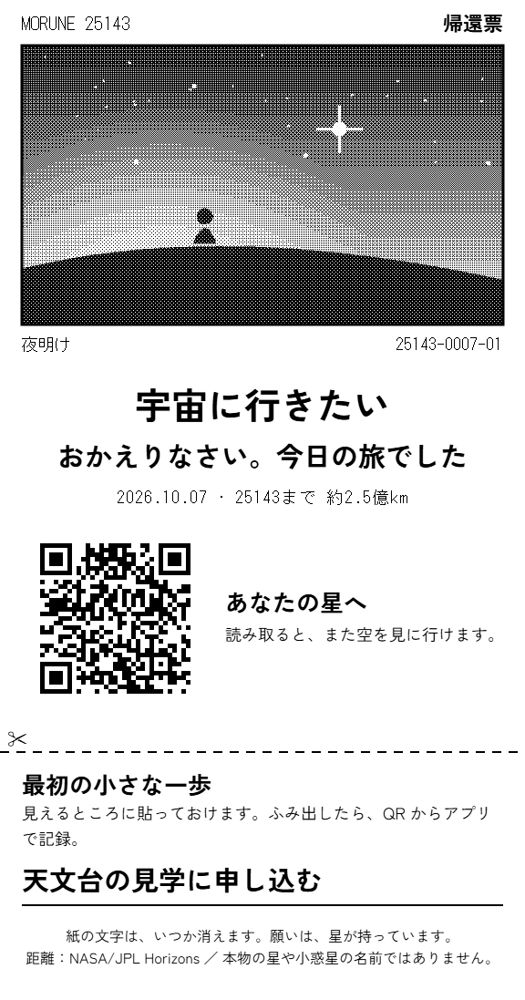
帰還票（感熱紙80mm）開発途中：絵は仮の星の絵。感熱プリンターへの直接印刷は未対応。
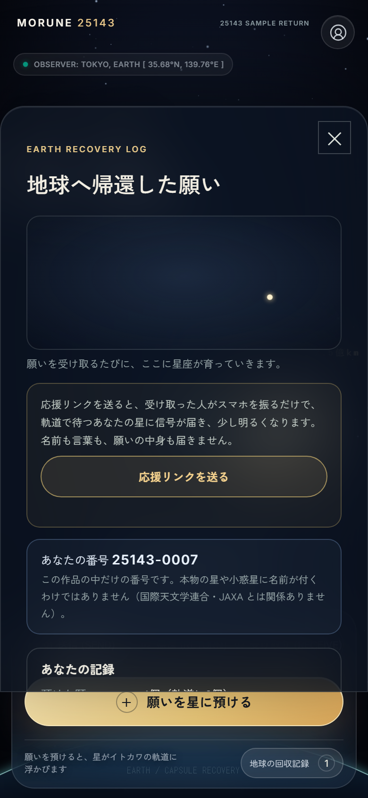
星座・あなたの番号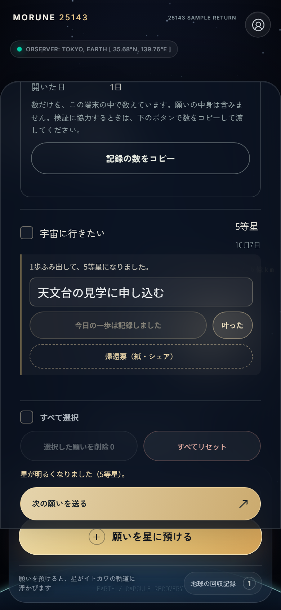
一歩ふみ出すと明るくなる最初に願いを預けたとき、人の番号（25143-0001 から順）がサーバーから届く。願いの番号（-01, -02…）は端末で数える。作品の中だけの番号で、本物の星の名前ではない。
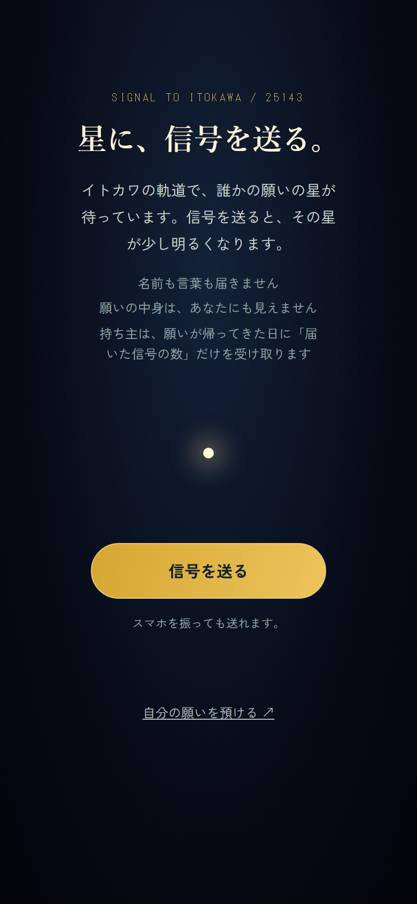
応援する人の画面（/signal）「地球の回収記録」の「応援リンクを送る」で、自分の星への応援リンクを LINE などで送る。
リンクを開いて「信号を送る」を押す（スマホを振っても送れる）。同じ星へは1台の端末から1日1回。名前も言葉も届かない。
預けている間に届いた信号の分だけ、軌道の星が明るくなる。帰ってきた日に「預けているあいだに、N回の信号が届いていました」と伝える。
開発途中（本番では停止）：みんなの星（願いを匿名で星空に流し、他の人の星に応援を送る）。実装済みだが、投稿を見守る体制が整うまで本番では止めている。
| 機能 | 状態 |
|---|---|
| 願いを預ける・帰還が始まる日 | 本番で動作 |
| 振る／タップで1つ帰す・はじめての1回 | 本番で動作 |
| 受け取る／軌道へ戻す／保存 | 本番で動作 |
| 待っていた日数・25143までの実際の距離 | 本番で動作 |
| 帰還票（紙に印刷・シェア・QR） | 本番で動作（絵は仮） |
| 星座・育つ（等級）・叶った星 | 本番で動作 |
| 番号 25143-人-願い | 本番で動作 |
| 応援の信号 | 本番で動作 |
| ネットなしで動く（PWA） | 本番で動作 |
| みんなの星（匿名の公開・通報） | 開発途中（実装済み・本番停止） |
| キーワードの絵のガチャ | 開発途中（絵を制作中） |
| 感熱プリンターへの直接印刷 | 開発途中（未対応） |
| カレンダーに追加・AI で星団に | 構想（未着手） |
願いの中身・名前・IP アドレスはサーバーに送らない。
GitHub：mai-san447/hello-earth-25143（公開。最初に表示されるブランチが提出版）。README に開発・テスト・公開の手順、docs に設計と作業記録。自動テスト 100件。